Links
GitHub Repository GitHub Pages Demo TimeXer Official
Data
Public: data/public/weather_public.csv — Weather-style benchmark
Private: data/private/face_headpose_private.csv + raw videos on Google Drive
RQ1: So sánh mô hình (Định lượng)
| Dataset | DatasetKey | Model | MSE | MAE | RMSE |
|---|---|---|---|---|---|
| Face Head-Pose (Private) | private | TimeXer | 1.0302 | 0.8605 | 1.0150 |
| Face Head-Pose (Private) | private | iTransformer | 1.0238 | 0.8575 | 1.0118 |
| Face Head-Pose (Private) | private | PatchTST | 1.0249 | 0.8602 | 1.0124 |
| Face Head-Pose (Private) | private | TiDE | 1.0209 | 0.8595 | 1.0104 |
| Face Head-Pose (Private) | private | DLinear | 1.0501 | 0.8653 | 1.0248 |
| Weather CO2 (Public) | public | TimeXer | 0.3755 | 0.4893 | 0.6128 |
| Weather CO2 (Public) | public | iTransformer | 0.3732 | 0.4877 | 0.6109 |
| Weather CO2 (Public) | public | PatchTST | 0.3720 | 0.4876 | 0.6099 |
| Weather CO2 (Public) | public | TiDE | 0.3731 | 0.4882 | 0.6108 |
| Weather CO2 (Public) | public | DLinear | 0.3882 | 0.4973 | 0.6230 |
RQ1: So sánh mô hình (Định tính)
| Criterion | TimeXer | iTransformer | PatchTST | TiDE | DLinear |
|---|---|---|---|---|---|
| Exogenous variate-level embedding | Yes (V token) | No (all variates equal) | No (concat/add only) | Concat at input | Concat at input |
| Patch-level temporal modeling | Yes | No (linear projection) | Yes | No | No |
| Global bridge token (G) | Yes | No | No | No | No |
| Cross-attention exo→endo | Yes | Self-attn only | No | No | No |
| Handles irregular exo length | Designed for it | Limited | Limited | Limited | Limited |
RQ2: Ablation Study (Định lượng)
| Dataset | DatasetKey | Ablation | Description | MSE | MAE | RMSE |
|---|---|---|---|---|---|---|
| Face Head-Pose (Private) | private | full | Full model (P+G, V, Cross-Attn) | 1.0217 | 0.8606 | 1.0108 |
| Face Head-Pose (Private) | private | no_global | Remove global token (P only) | 1.0204 | 0.8586 | 1.0101 |
| Face Head-Pose (Private) | private | exo_patch | Replace exo variate with patch embed | 1.0219 | 0.8581 | 1.0109 |
| Face Head-Pose (Private) | private | exo_add | Add exo summary instead of cross-attn | 1.0212 | 0.8585 | 1.0105 |
| Face Head-Pose (Private) | private | exo_concat | Concat exo instead of cross-attn | 1.0198 | 0.8588 | 1.0099 |
| Face Head-Pose (Private) | private | no_exo | Remove exogenous variables | 1.0207 | 0.8575 | 1.0103 |
| Weather CO2 (Public) | public | full | Full model (P+G, V, Cross-Attn) | 0.3806 | 0.4926 | 0.6169 |
| Weather CO2 (Public) | public | no_global | Remove global token (P only) | 0.3832 | 0.4952 | 0.6190 |
| Weather CO2 (Public) | public | exo_patch | Replace exo variate with patch embed | 0.3834 | 0.4959 | 0.6192 |
| Weather CO2 (Public) | public | exo_add | Add exo summary instead of cross-attn | 0.3736 | 0.4874 | 0.6112 |
| Weather CO2 (Public) | public | exo_concat | Concat exo instead of cross-attn | 0.3763 | 0.4893 | 0.6134 |
| Weather CO2 (Public) | public | no_exo | Remove exogenous variables | 0.3848 | 0.4960 | 0.6203 |
RQ3: Minh họa dự đoán thực tế
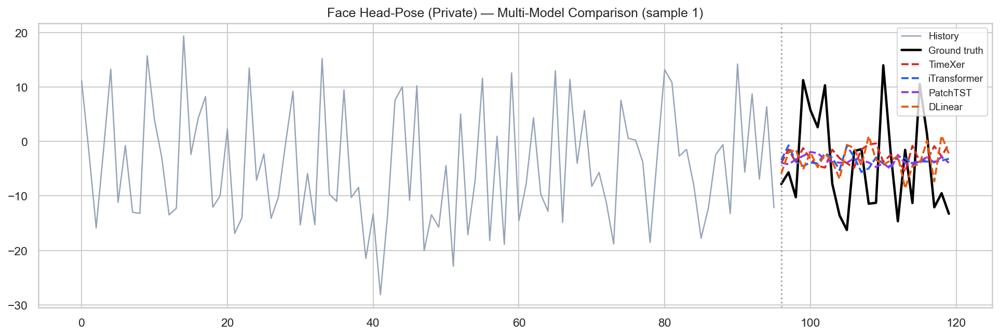
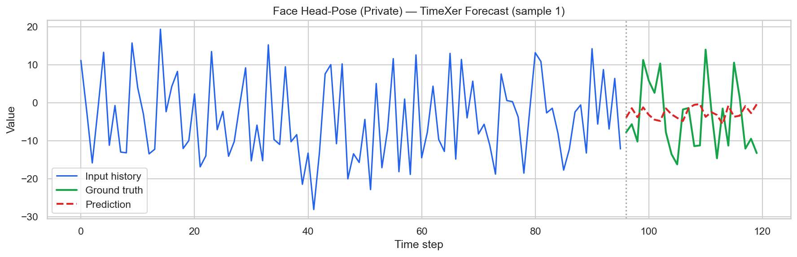
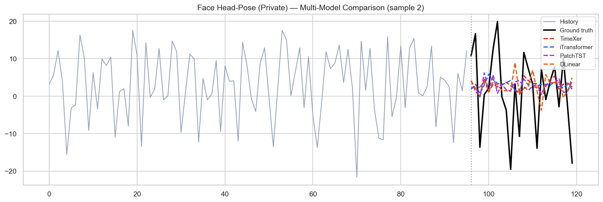
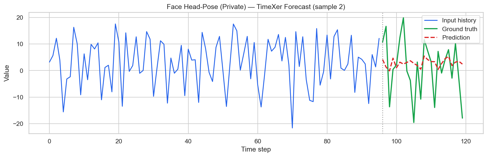
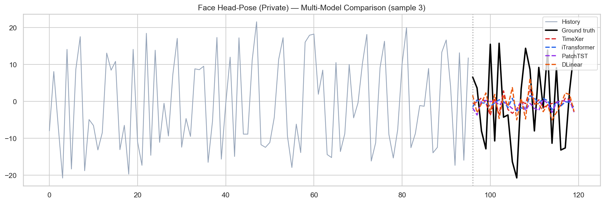
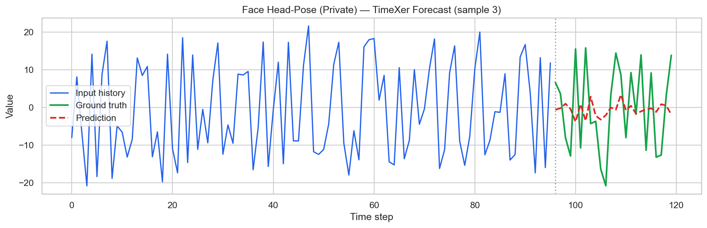
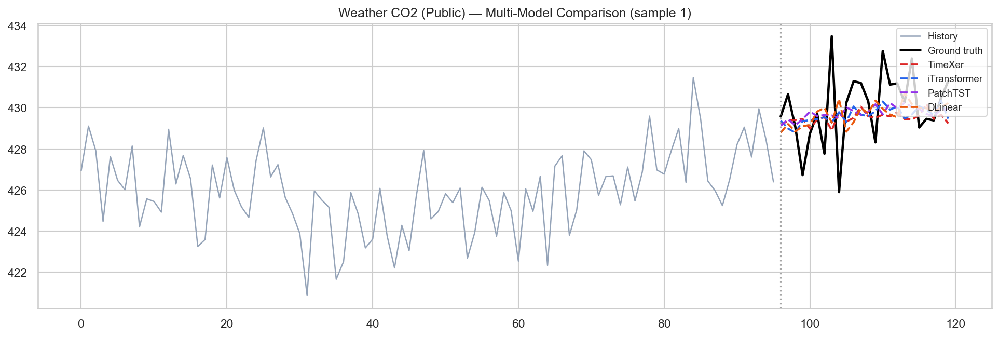
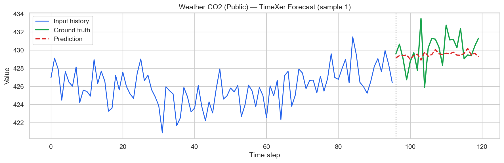
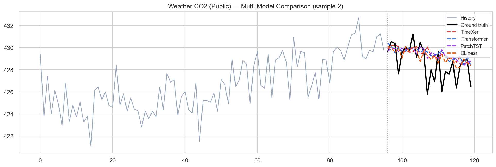
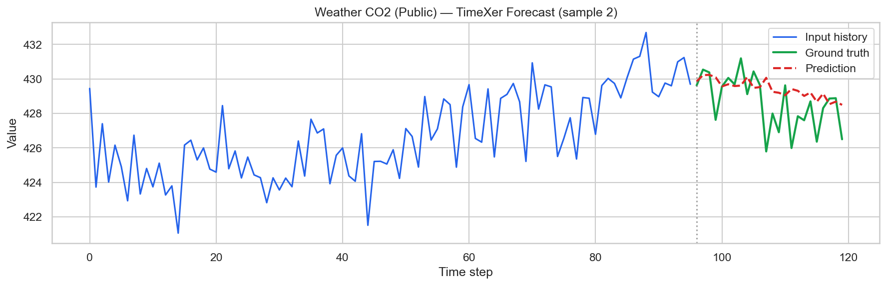
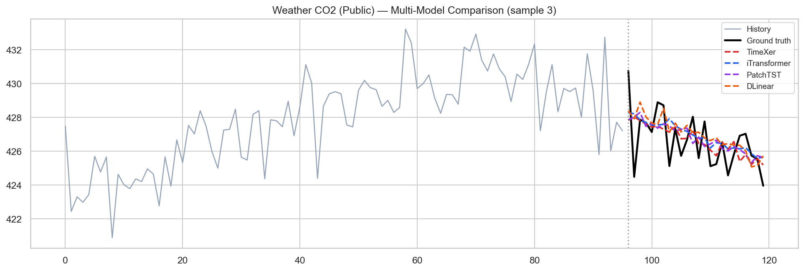
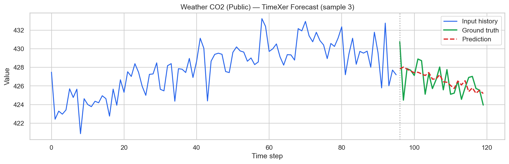